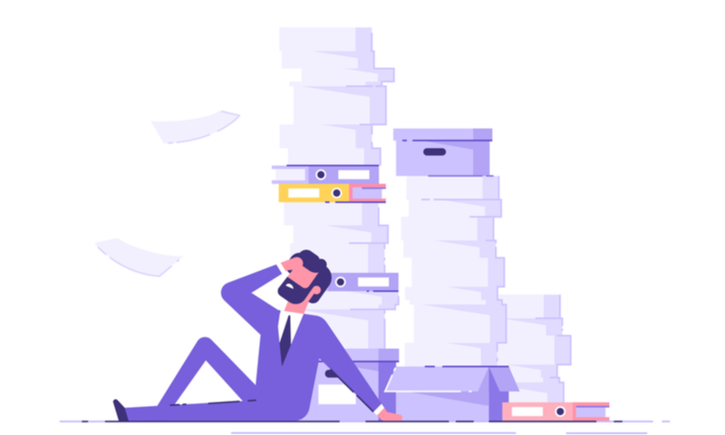
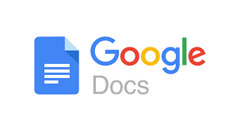

7 VENTAJAS Y DESVENTAJAS DE LA INFORMACIÓN DIGITAL
Ventajas
1.- Reducción de costes de producción y distribución
La información digital elimina en muchos casos la necesidad de medios físicos (papel, discos, impresiones, envíos postales).
Por ejemplo, una editorial que lanza un libro en formato digital (eBook) evita gastos de impresión, almacenamiento y logística.
Lo mismo ocurre con la música, el cine, los periódicos o las facturas electrónicas: la distribución es inmediata y con coste marginal cercano a cero.

2.- Mayor eficiencia en el almacenamiento y búsqueda
Miles de documentos pueden almacenarse en dispositivos muy pequeños, como una memoria USB o un disco duro.
Además, con herramientas de indexación y bases de datos, buscar información específica puede tomar apenas segundos.
Por ejemplo, un archivo físico con expedientes médicos ocuparía habitaciones enteras; en formato digital, cabe en un servidor que permite localizar cualquier dato en segundos.

3.- Posibilidad de colaboración remota en tiempo real
Plataformas como Google Docs, Notion, Microsoft Teams permiten que personas ubicadas en diferentes partes del mundo trabajen sobre el mismo documento o proyecto a la vez.
Esto ha transformado el teletrabajo, la educación a distancia, los equipos de desarrollo y la producción de contenido colaborativo.
Incluso en sectores creativos (como la edición de vídeo o música), es posible colaborar desde distintos países sin verse físicamente.

4.- Flexibilidad y adaptación a diferentes contextos
La información digital puede adaptarse según el dispositivo, la persona o el idioma. Por ejemplo: - - Un mismo artículo puede verse como página web, archivo PDF o como resumen de audio.
- Puede adaptarse para personas con discapacidad visual (mediante lectores de pantalla), o convertirse en audiolibro.
- Puede traducirse automáticamente o ajustarse al nivel de comprensión del usuario.
Esta flexibilidad convierte a la información digital en una herramienta de inclusión y personalización.
Desventajas
1.- Riesgos de obsolescencia tecnológica
La tecnología cambia rápidamente, y los formatos, dispositivos o sistemas actuales pueden quedar obsoletos en poco tiempo.
Por ejemplo, documentos guardados en disquetes o en software antiguo pueden resultar ilegibles hoy si no se migraron.
Esto obliga a actualizar y adaptar constantemente los medios de almacenamiento y software, lo que supone costes adicionales y riesgos de pérdida.
2.- Vulnerabilidad a ciberataques
Al estar conectada y almacenada digitalmente, la información es susceptible de ser hackeada, robada o manipulada.
Desde datos bancarios hasta historiales médicos, la seguridad digital se ha convertido en una prioridad global.
Ransomware, phishing, malware o fugas de información en grandes empresas han demostrado lo expuesta que puede estar la información digital si no se protege adecuadamente.

3.- Desigualdad en el acceso digital (brecha digital)
No todas las personas tienen acceso a dispositivos adecuados, conexión a internet o competencias digitales.
Esta desigualdad genera una brecha digital, donde algunos sectores de la población (especialmente en zonas rurales o en países en desarrollo) quedan excluidos del acceso a la información digital.
También afecta a personas mayores o con escasa formación tecnológica, limitando sus oportunidades laborales, educativas y sociales.
4.- Sobrecarga informativa y dificultad para filtrar contenido veraz
Internet y las redes sociales han generado un exceso de información, lo que se conoce como infoxicación.
No toda la información digital es veraz, contrastada o útil. Noticias falsas, desinformación y contenidos manipulados pueden difundirse rápidamente.
Esto plantea un reto: aprender a filtrar, verificar y gestionar la información de forma crítica y responsable, algo fundamental en la era digital.